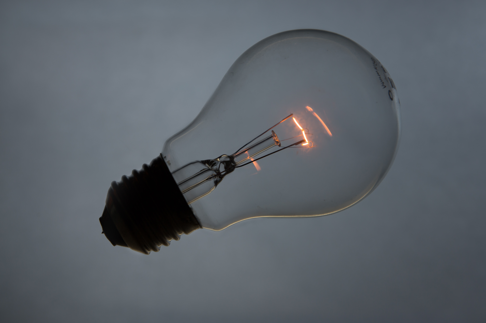
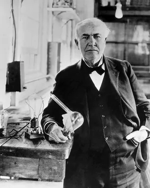

Aunque Edison era un hábil negociador, era un mal gestor financiero, y a menudo gastaba y regalaba el dinero más rápidamente de lo que lo ganaba. En 1871 se casó con Mary Stilwell, de 16 años, que era tan imprudente en asuntos domésticos como él en los negocios, y antes de finales de 1875 tenían dificultades financieras. Para reducir sus gastos y la tentación de gastar dinero, Edison trajo a su padre, ya viudo, desde Port Huron para construir un laboratorio y taller mecánico de dos plantas y media en los alrededores rurales de Menlo Park, Nueva Jersey -a 12 millas al sur de Newark-, donde se trasladó en marzo de 1876. Le acompañaban dos socios clave, Charles Batchelor y John Kruesi. Batchelor, nacido en Manchester en 1845, era un maestro mecánico y dibujante que se complementaba perfectamente con Edison y le servía de "oreja" en proyectos como el fonógrafo y el teléfono. También fue el responsable de dar forma a los dibujos que Kruesi, un maquinista de origen suizo, tradujo en modelos.
Edison vivió sus mejores momentos en Menlo Park. Mientras experimentaba con un cable submarino para el telégrafo automático, descubrió que la resistencia eléctrica y la conductividad del carbono (entonces llamado plumbago) variaban en función de la presión a la que estaba sometido. Fue un descubrimiento teórico importante, que permitió a Edison idear un "relé de presión" que utilizaba carbono en lugar de los imanes habituales para variar y equilibrar las corrientes eléctricas. En febrero de 1877, Edison inició experimentos destinados a fabricar un relé de presión que amplificara y mejorara la audibilidad del teléfono, un aparato que Edison y otros habían estudiado pero que Alexander Graham Bell fue el primero en patentar, en 1876. A finales de 1877, Edison había desarrollado el transmisor de botón de carbono que se utilizó en los altavoces y micrófonos telefónicos durante un siglo.
Edison inventó muchos artículos, incluido el transmisor de carbono, en respuesta a demandas específicas de nuevos productos o mejoras. Pero también tenía el don de la serendipia: cuando se observaba algún fenómeno inesperado, no dudaba en detener el trabajo en curso y desviar el rumbo en una nueva dirección. Así fue como, en 1877, logró su descubrimiento más original, el fonógrafo. Como el teléfono se consideraba una variante de la telegrafía acústica, durante el verano de 1877 Edison intentaba concebir para él, como había hecho con el telégrafo automático, una máquina que transcribiera las señales a medida que se recibían, en este caso en forma de voz humana, para que luego pudieran transmitirse como mensajes telegráficos. (El teléfono aún no se concebía como un medio de comunicación general de persona a persona). Algunos investigadores anteriores, en particular el inventor francés Léon Scott, habían teorizado que cada sonido, si se podía grabar gráficamente, produciría una forma distinta parecida a la taquigrafía, o fonografía ("escritura sonora"), como se conocía entonces. Edison pretendía reafirmar este concepto empleando un transmisor de carbono con punta de estilete para realizar impresiones en una tira de papel parafinado. Para su asombro, las hendiduras apenas visibles generaban una vaga reproducción del sonido cuando se retiraba el papel bajo el estilete.
En diciembre de 1877, Edison presentó el fonógrafo de papel de aluminio, que sustituía la tira de papel por un cilindro envuelto en papel de aluminio. Fue recibido con incredulidad. De hecho, un destacado científico francés declaró que se trataba del truco de un ventrílocuo ingenioso. El asombro del público fue rápidamente seguido por la aclamación universal. Edison saltó a la fama mundial y fue apodado el Mago de Menlo Park, aunque pasó una década antes de que el fonógrafo pasara de ser una curiosidad de laboratorio a un producto comercial.
Otra rama de los experimentos con carbón llegó antes a buen puerto. Samuel Langley, Henry Draper y otros científicos estadounidenses necesitaban un instrumento altamente sensible que pudiera utilizarse para medir los diminutos cambios de temperatura en el calor emitido por la corona del Sol durante un eclipse solar que tuvo lugar a lo largo de las Montañas Rocosas el 29 de julio de 1878. Para satisfacer esas necesidades, Edison ideó un "microtasímetro" que empleaba un botón de carbono. En aquella época se estaban realizando grandes avances en la iluminación por arco eléctrico, y durante la expedición, a la que Edison acompañaba, los hombres discutieron la viabilidad de "subdividir" las intensas luces de arco de modo que la electricidad pudiera utilizarse para la iluminación del mismo modo que con los pequeños "quemadores" individuales de gas. El problema básico parecía ser evitar que el quemador, o bombilla, se consumiera impidiendo su sobrecalentamiento. Edison pensó que podría resolverlo creando un dispositivo similar a un microtasímetro para controlar la corriente. Se atrevió a anunciar que inventaría una luz eléctrica segura, suave y barata que sustituiría a la luz de gas.
La luz eléctrica incandescente había sido la desesperación de los inventores durante 50 años, pero los logros anteriores de Edison imponían respeto por su jactanciosa profecía. Así, un sindicato de importantes financieros, entre ellos J.P. Morgan y los Vanderbilt, crearon la Edison Electric Light Company y le adelantaron 30.000 dólares para investigación y desarrollo. Edison propuso conectar sus lámparas en un circuito paralelo subdividiendo la corriente, de modo que, a diferencia de las lámparas de arco, que se conectaban en un circuito en serie, el fallo de una bombilla no provocara el fallo de todo el circuito. Algunos eminentes científicos predijeron que un circuito de este tipo nunca sería factible, pero sus conclusiones se basaban en sistemas de lámparas con baja resistencia, el único tipo de luz eléctrica que funcionaba con éxito en aquella época. Edison, sin embargo, decidió que una bombilla de alta resistencia serviría para su propósito, y comenzó a buscar una adecuada.
Para ello contó con la ayuda de Francis Upton, de 26 años, licenciado en ciencias por la Universidad de Princeton. Upton, que se incorporó al laboratorio en diciembre de 1878, aportó los conocimientos matemáticos y teóricos de los que carecía el propio Edison. (Edison reveló más tarde: "Cuando experimenté con la lámpara incandescente no entendía la ley de Ohm". En otra ocasión dijo: "No dependo en absoluto de las cifras. Hago un experimento y razono el resultado, de alguna manera, por métodos que no podría explicar").
En el verano de 1879, Edison y Upton habían avanzado lo suficiente en el desarrollo de un generador -que, por acción inversa, podía utilizarse como motor- que Edison, acosado por el fracaso de los experimentos con lámparas incandescentes, consideró la posibilidad de ofrecer un sistema de distribución eléctrica para la energía, no para la luz. En octubre, Edison y sus colaboradores habían obtenido resultados alentadores con una compleja bombilla de vacío controlada por un regulador y con un filamento de platino, pero el coste del platino habría hecho poco práctica la luz incandescente. Mientras experimentaban con un aislante para el hilo de platino, descubrieron que, en el vacío muy mejorado que estaban obteniendo gracias a los avances realizados en la bomba de vacío, el carbono podía mantenerse durante algún tiempo sin necesidad de un elaborado aparato regulador. Basándose en el trabajo de Joseph Wilson Swan, un físico inglés, Edison descubrió que un filamento de carbono proporcionaba una buena luz con la alta resistencia concomitante necesaria para la subdivisión. Desde el primer avance, a mediados de octubre, hasta la demostración inicial para los patrocinadores de la Edison Electric Light Company, el 3 de diciembre, los progresos fueron constantes.
Sin embargo, no fue hasta el verano de 1880 cuando Edison determinó que la fibra de bambú carbonizada constituía un material satisfactorio para el filamento, aunque el primer sistema de iluminación operativo del mundo se había instalado en el buque de vapor Columbia en abril. El primer sistema comercial terrestre "aislado" (de un solo edificio) de incandescencia se instaló en la imprenta neoyorquina de Hinds y Ketcham en enero de 1881. En otoño se instaló en el viaducto de Holborn, en Londres, un sistema central de alimentación temporal de demostración, con motivo de una exposición en el Crystal Palace. El propio Edison supervisó el tendido de la red eléctrica y la instalación del primer sistema centralizado comercial permanente del mundo en el bajo Manhattan, que entró en funcionamiento en septiembre de 1882. Aunque los primeros sistemas estaban plagados de problemas y pasaron muchos años antes de que la iluminación incandescente alimentada por electricidad procedente de estaciones centrales se impusiera de forma significativa a la iluminación de gas, las plantas de iluminación aisladas para empresas como hoteles, teatros y tiendas florecieron, al igual que la reputación de Edison como el mayor inventor del mundo.
Uno de los descubrimientos accidentales realizados en el laboratorio de Menlo Park durante el desarrollo de la luz incandescente anticipó el descubrimiento del electrón por el físico británico J.J. Thomson 15 años más tarde. En 1881-82, William J. Hammer, un joven ingeniero encargado de probar las bombillas, observó un resplandor azul alrededor del polo positivo de una bombilla de vacío y un ennegrecimiento del cable y la bombilla en el polo negativo. Este fenómeno se denominó primero "sombra fantasma de Hammer", pero cuando Edison patentó la bombilla en 1883 pasó a conocerse como "efecto Edison". Los científicos determinaron más tarde que este efecto se explicaba por la emisión termoiónica de electrones del electrodo caliente al frío, y se convirtió en la base del tubo de electrones y sentó las bases de la industria electrónica.
Edison había trasladado sus operaciones de Menlo Park a Nueva York cuando comenzaron las obras del sistema eléctrico de Manhattan. Cada vez más, la propiedad de Menlo Park se utilizaba únicamente como casa de verano. En agosto de 1884, Mary, la esposa de Edison, cuya salud se deterioraba y sufría períodos de enajenación mental, murió allí de "congestión cerebral", al parecer un tumor o una hemorragia. Su muerte y el traslado de Menlo Park marcan aproximadamente el ecuador de la vida de Edison.
© Uso Académico
Maracaibo - Estado Zulia
Venezuela